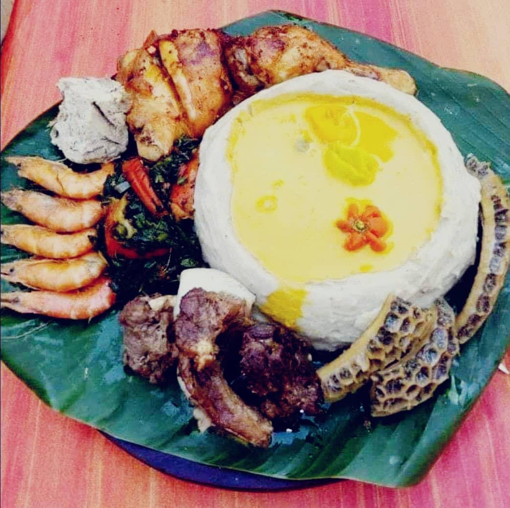
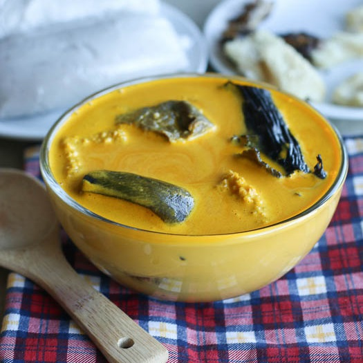
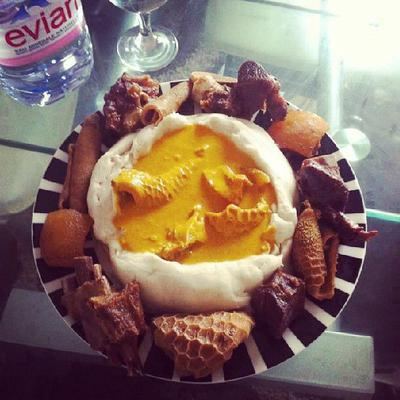
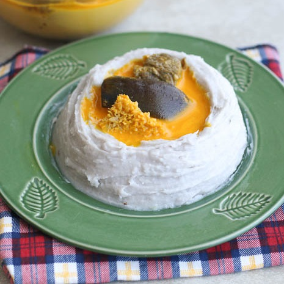

Intensely spicy - filled with ethnic flavours
Achu is a food that’s eaten in the Western part of Cameroon. It is usually eaten with different types of soups, for example yellow soup or green soup. It’s a staple food in the western part of Cameroon because the soil and the weather are favorable for growing cocoyam in this part of Cameroon. It can also be called “fufu” in some places or “taro” in the French speaking part of Cameroon.
In a typical traditional setting, the food is served on plantain leaves and eaten on the floor with the fingers.
This gloriously yellow, delicate soup can be superb or catastrophic, depending on whether you carry out certain essential points. Traditionally it is made with a collision and fusion of beef or chicken broth, red oil, limestone and a variation of spices

Typical Cameroonian Home Cooking
It’s mostly eaten on traditional occasions, festivals as well as birth and death celebrations. Because of the length of time it takes to prepare achu, it’s hard to find people eating it every day like in comparing to other foods. In the years back, it was common to find two or more people eating achu on the same leaf, symbolizing unity.



Achu is favourite meal of our champ, Francis Ngannou. He enjoys it often while on vacation in Batie.
With the coming of modernism, people no longer eat achu on leaves; neither do they eat in the same plate. However, to maintain the spirit of unity in a family or community, everybody sits at the table at meal time, when achu is the menu of the day. Even though modernism has taken the leaves away, there’s still one thing that modernism will never steal as far as achu is concerned, it’s the fact that it will always be eaten with the fingers and never with a spoon. Bon appétit!

Laura Tonta ( Cook Blogger )
Feel free to borrow, broil, brown, bake and share these recipes with your friends and family. And don’t forget to come back and leave a comment telling us how it worked out for you.
Comments
N'Golo Mita
3 weeks agoI just love this meal, I could eat it every day.
Véronique Nayolo
5 weeks agoThank you for the useful information about the meal. We eat it all the time yet we know little about it.